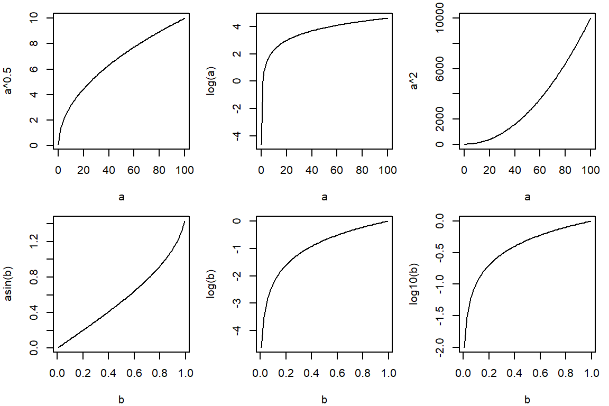

Practical 3 Normal distribution
Statistical inference is the process by which we infer from a sample statistic to the population. We need to infer from samples to populations because it is usually impossible to measure the entire populations. We call this this estimating population parameters from samples.
In order to infer from samples to populations we need to understand/predict how the statistics we generate from our samples ‘behave’. To do this we use theoretical distributions.
Q71. Which two theoretical distributions have we already covered in this course?
The normal (a.k.a., Gaussian) distribution is another theoretical distribution and is central to inferential statistics. If your data (or, more accuarately, statistics derived from you data) are reasonably approximated by the normal distribution then you will be able to use a wide range of techniques to deal with it.
In this practical we will be examining the normal distribution, calculating Z scores both manually and in R, and interpreting those Z scores. We’ll also use our knowledge of the normal distribution’s behaviour to produce confidence intervals and assess whether data are reasonably assummed to be normally distributed, transforming the data where they are not. We’ll apply the CLT and evaluate how well other distributions are approximated by the normal distribution.
3.1 Using the normal probability distributions
The length, in cm, of a catch of herring was measured. Five hundred individuals were studied. We will consider this group to be the entire population of interest. The population parameters are: mean length 37.6 cm, standard deviation 1.20 cm.
Q72. What are the theoretical limits of the normal distribution?
Q73. Do you think normality a fair assumption for these data?
Q74. Assume length of herring is approximately normally distributed and write down the model which describes the fish length distribution in the standard notation.
When we have population parameters such as we have here, we can calculate Z scores for individuals (or groups of individuals) from that population and calculate how unusual they are. For the moment, we are interested in determining what proportion of fish from this population expected to be <38cm.
Q75. Sketch a normal distribution, showing mean of 37.6cm, note the sd on your sketch and sketch on the location of a fish at 38 cm.
Q76. Mark-out the bit of the sketch which the question asks you about
Q77. Mark out the bit of the sketch that our manually determined Z scores relate to.
Q78. Calculate the Z score for a fish of 38cm. How unusual is such an observation? What proportion of fish will be <38 cm, what proportion of fish >38 cm?.
3.1.1 Using R to calculate areas under the normal curve
To solve this problem using R we use cumulative probability. Observations at the extreme low end are extremely unlikely, but the probability of observing data increases and reaches a maximum at the mean, after which it declines again. The normal distribution is symmetrical.
Q79. What shape is the cumulative probability curve of a normally distributed variable?
You can ask R to determine the probabilities of an eventuality occurring within a normal distribution. For example, you could ask what the probability is of observing a 38 cm or more fish, when the mean is 37.6 cm and the standard deviation is 1.20 cm. You need to specify the model, and the problem. Use ?dnorm and look at your options.
# cumulative probability: which bit of the curve does this relate to?
pnorm(q = 38, mean = 37.6, sd = 1.2) Figure 3.1: Functions for distributions in R illustrated with a standard normal.
We can plot any normal distribution we like. Play with the values for mu and sigma below, adjusting the values for from and to as needed to see the distribution.
mu <- 37.6 # population mean
sigma <- 1.2 # population sd
curve(dnorm(x, mean = mu, sd = sigma), from = 30, to = 45,
main = "Normal density", ylab = "Density", xlab = "Fish length, cm")I can define a population like this \(y \sim Norm(37.6, 1.2)\) and ask questions about \(P(y_i \leq a)\). E.g., what is the probability that a random fish drawn from this population is <38 cm (\(P(y_i < 38)\)). The answer to that is 0.6306 or approximately 63% (2 sf).
Q80. How does your hand calculation compare? Is there a discrepancy? If so, why?
3.2 Normal model adequacy
A separate fish population (long-eared wrasse) is described as \(y \sim Norm(5.14 cm, 25 cm)\).
Q81. What is the mean length and standard deviation of long-eared wrasse?
Q82. Calculate the proportion of fish that are less than zero cm in length.
Q84. What do your results indicate about the adequacy of the normal model to describe the length distribution of long-eared wrasse?
Q85. Recalculate your answers with 1/10th the standard deviation: \(y \sim Norm(5.14, 2.5)\).
3.3 Calculating quantiles in the normal distribution
A quantile is one of a series of values that divides a frequency distribution (i.e. a set of numbers) into equally represented groups (i.e., the same number of observations per group). For example, there are three values (Q1, Q2, Q3) that split a normal distribution into four groups (negative infinity to Q1, Q1 to Q2 (median), Q2 to Q3, and Q3 to positive infinity). Q3 - Q2 is the middle 50% of the data: the interquartile range.
There are 99 quantiles, called percentiles, that split your data into 100 groups. The 2.5 percentile is the value that splits your data into two groups corresponding to 2.5% along the distribution (from negative infinity for the normal distribution). Just as we can ask what proportion of a distribution is above or below a set value, we can also ask between what values will a given percentage of my data lie (e.g. what values correspond to the middle 95%?).
To solve this problem using R we use the cumulative probability function qnorm().
qnorm(p = 0.975, mean = 37.6, sd = 1.2) # p is the cumulative probability ## [1] 39.95196probs <- seq(from = 0.1, to = 0.9, by = 0.2) # vectorize for >1 probability
qnorm(p = probs, mean = 37.6, sd = 1.2) ## [1] 36.06214 36.97072 37.60000 38.22928 39.13786probs_95 <- c(0.025, 0.975) # middle 95% (2.5% on either side)
qnorm(p = probs_95, mean = 37.6, sd = 1.2) # round as appropriate## [1] 35.24804 39.95196These values (probs_95 = c(0.025, 0.975)) identify proportions of the cumulative curve. That is, they identify the bottom 2.5% and the bottom 97.5% of the curve. Values between these two parameters will constitute the central 95% of your data.
For the next question, return to the herring data where the population was \(y \sim Norm(37.6, 1.44)\).
Q86. Find the values that capture the middle 95 and 90% of the herring data.
We quote our mean and interval like this: “The mean fish length and 95% interval was 37.6 cm (35.2 cm, 40.0 cm)”. Remember to use to same degree of precision (significant figures) for confidence intervals as was used to gather the data (or as specified in the question, defaulting to three).
Q87. What value would you expect to correspond to 0.5 (i.e., what value would be found half-way along your distribution)?
Q88. Check your answer above using qnorm()
You can easily visualise this distribution in R:
# your population is defined thus: y ~ Norm(mean=100, variance=225)
mu <- 100
sigma <- 15
# lower boundary and upper boundary of the region of interest
lb <- 80
ub <- 140
x <- seq(-4, 4, length.out = 100) * sigma + mu
hx <- dnorm(x, mu, sigma)
plot(x, hx,
type = "n", xlab = "IQ Values", ylab = "",
main = "Normal Distribution", axes = FALSE
)
i <- x >= lb & x <= ub
lines(x, hx)
polygon(c(lb, x[i], ub), c(0, hx[i], 0), col = "red") # create 100 polygons
area <- pnorm(ub, mu, sigma) - pnorm(lb, mu, sigma)
result <- paste(
"P(", lb, "< IQ <", ub, ") =",
signif(area, digits = 3)
)
mtext(result, 3)
axis(1, at = seq(floor(mu - 4*sigma), floor(mu + 4*sigma), sigma), pos = 0)Figure 3.2: The normal distribution illustrating probability of a random individual from your population having an IQ between 80 and 140.
Q89. Change the parameters in the above to your herring data where the population was distributed \(y \sim Norm(37.6, 1.44)\) and check that the values you generated for the 95% interval correspond when plugged into lb and ub in the code.
Q90. What is the difference between \(< x\) and \(\leq x\) when applied to continuous data?
Q91. Does this also apply to discontinuous data?
Think about how intervals change when the population standard deviation changes.
Q92. With everything else equal, try doubling, quadrupling, and halving the standard deviation on the herring data then re-running the same code.
Q93. What effect does this have on your interval?
3.4 Testing for normality
As we note in the lectures, many statistical tests require that data are reasonably approximated by a normal distribution and have homogeneous variance. R can be used to formally test the assumption that data are normally distributed, though you should have some idea of whether this is likely through consideration of the data source. This applies particularly where you have a small sample size and, consequently, evaluating the distribution is challenging.
The data you collect will be part of a population. The normality check assesses the viability of the assumption that the data you collected were drawn from a population that was normally distributed. You should note that populations are, in practice, never actually normally distributed. Your test is to assess how reasonable the assumption of normality is.
library(readxl)
MS <- read_xlsx("data/practical_3_4.xlsx", sheet = "Mood shrimp")
# check the data using head(), str() etc.par(mfrow = c(1, 2))
qqnorm(MS$Shrimp1)
qqline(MS$Shrimp1, col = 2) # the data fall near the line
qqnorm(MS$Shrimp2)
qqline(MS$Shrimp1, col = 2) # the data deviate widely from the lineFigure 3.3: Normal (QQ) plots. The left indicates that the normality assumption might be reasonable, not so on the right.
The axes on the probability plots have been rescaled so that, if your data are perfectly normal, the data points would fall on a straight line (the red line on the graphs generated by qqline()). Any deviation from the red straight line in your data indicates a lack of normality. What we need to assess is how serious any deviation is and whether it is sufficient to indicate that the assumption of normality is not ‘reasonable’. This is a subjective decision, and two different statisticians may tell you different answers about the same data.
As your sample size decreases, it will be increasingly difficult to see if your data are reasonably approximated by a normal distribution. There are many formal statistical methods for assessing normality, but as we already know it is impossible for your data to have been drawn from a population that is normal and this means such tests are largely redundant. You must assess the assumptions of your model (e.g. the general linear model, which includes ANOVA and linear regression), but you should be aware that all data fails the assumptions. However, this doesn’t mean the outputs from such models aren’t useful - provided the assumptions are ‘reasonably’ well met. There is no hard rule as to what constitutes ‘reasonable’!
Q94. Make histograms of both Shrimp1 and Shrimp2. Comment on their apparent distributions.
3.5 Data transformations
The assumption that our sample data are drawn from a normally distributed population is central to the use of many important inferential statistical techniques. However, frequently it is not reasonable to assume that data are likely to be normally distributed and they ‘fail’ normality tests (e.g. clearly do not fall on the red qqline()).
Non-normality often occurs because our measurements are near a logical zero. For example, chemical concentrations (e.g., of zinc in sediments) is limited by zero; you cannot have negative zinc concentrations. Similarly, you cannot have negative lengths, time, mass, etc. Where data is collected ‘near’ a logical zero they are often not normally distributed, since the normal distribution predicts a negative-value ‘tail’ which is impossible.
There are several simple mathematical transformation options that you can use in an attempt to convert your data to something that is reasonably approximated by a normal distribution even if it is not well approximated in the original measurement units.
Here we will consider three common transformations. These are the log (base 10 or natural), the square-root, and the arcsine transformation. These transformations often have the additional benefit of correcting unequal variances (see Practical 5) in addition to non-normality so they are very useful. These three are often used in distinct circumstances.
- Log (
log()): When the distribution is skewed right. Often ‘cures’ heteroscedasticity.
- Square-root (
sqrt()): When the measurements are areas (e.g., leaf areas). Often used to ‘down-weight’ common species (e.g., Practical 6), which is unrelated to model assumptions.
- Arcsine (
asin()): When the measurements are percentages or proportions. Tends to stretch out the tails (e.g., near 0 or 1 for proportions) and squash the middle (e.g., near 0.5).
Identifying the correct transformation can be led by an underlying comprehension of the nature of the data. However, this often doesn’t work so expect some trial and error.
a <- seq(0.01, 100, length.out=100)
b <- seq(0.01, 0.99, length.out=100)
par(mfrow=c(2,3), mar=c(4,4,1,1))
plot(a, a^0.5, type="l")
plot(a, log(a), type="l")
plot(a, a^2, type="l")
plot(b, asin(b), type="l")
plot(b, log(b), type="l")
plot(b, log10(b), type="l")
Q95. Using the Radon concentration worksheet, plot the data. Do they look normally distributed?
Q96. In your own time,use R to determine the log, square root, and reciprocals (and combinations of all of them: at least one converts the data to approximate normality).
# get the Radon data into R; the units are parts per billion
readxl::excel_sheets("data/practical_3_4.xlsx") ## [1] "Cod lengths" "Shrimps" "Caffeine"
## [4] "Non-parametric shrimp" "Mood shrimp" "Mood shrimp2"
## [7] "Swimming activity" "Clare's Al data" "Distribution"
## [10] "Radon (ppb)" "Zinc conc" "Heart-beat,2012"
## [13] "Sheet1"# load the dataset and try some transformationsQ97. Generate a vector of numbers and then use sqrt() on them.
3.6 Functions in R
Everything that does in R is a function. Writing your own functions has many benefits, including keeping your code legible and reducing work for yourself (since any changes need to be done in only one location instead of everywhere you’ve repeated the same code).
The trim_values function takes an argument (x), formats it to three digits, and returns the formatted output. Play around with the function to see how it works. We’ll use this function to keep our outputted values ‘clean’. In order to use the function, you must run the code defining it first. You will see your functions listed (alongside your dataframes, vectors, lists, etc) in R-Studio’s ‘Environment’ pane.
trim_values <- function(x) {
y <- format(x, digits = 3)
return(y)
}
# After running the code above, we can use the function:
trim_values(1.23456)## [1] "1.23"long_numbers <- rnorm(3, 2, 1)
data.frame(orig=long_numbers,
clean=trim_values(long_numbers))## orig clean
## 1 1.5816433 1.582
## 2 0.9450732 0.945
## 3 2.2338246 2.234Notice anything strange about the output? The function format() converts the vector from numeric to character to display each value with the same number of characters. The digits=3 argument is also taken as a suggestion (kind of like breaks in hist()). Try some of the other options in format() or adjust the digits argument, re-running the function definition each time to see the changes.
3.7 The central limit theorem
The central limit theorem states that the means of normally distributed data will, themselves, be normally distributed. In addition, the theorem states that the means of data which are NOT normally distributed will be normally distributed if the sample size is sufficiently large. In this practical we are going to demonstrate this theorem using random data generated from various probability distributions.
3.7.1 The distribution of means from various data distributions
# Run this code, then adjust the values for obs_data as you like.
# Play with more distributions if you want: ?stats::distributions
obs_data <- c(rnorm(2000, 200, 20),
rnorm(1500, 100, 20),
rlnorm(100, 5, 0.5),
rpois(1000, 15),
rpois(500, 30))
xlims <- range(obs_data)
# Define size of each sample and the number of sampling repeats
sample_size <- 30
num_samples <- 10000
# Sample num_samples times from obs_data, with n = sample_size for each sample
sample_means <- numeric(length=num_samples) # initialize an empty vector
for(i in 1:num_samples) {
sample_i <- sample(obs_data, sample_size, replace=T)
sample_means[i] <- mean(sample_i)
}
# plot observed distribution
par(mfrow = c(2, 2))
par(mar = c(5, 2, 2, 2))
hist(obs_data,
main = "Raw data distribution",
sub = paste0("mean: ", trim_values(mean(obs_data)),
", sd: ", trim_values(sd(obs_data))),
breaks = 30, xlab = "Observed length (cm)", xlim = xlims
)
qqnorm(obs_data, main = "Raw data QQ")
qqline(obs_data)
# plot distribution of sample means
hist(sample_means,
main = paste0("Sample distribution, N: ", sample_size),
sub = paste0("mean: ", trim_values(mean(sample_means)),
", sd: ", trim_values(sd(sample_means))),
breaks = 30, xlab = "Mean length (cm)", xlim = xlims
)
qqnorm(sample_means, main="Sample mean QQ")
qqline(sample_means)Figure 3.4: The central limit theorem in action (when n>30).
Q98. What do you notice about the location of the mean as a function of N?
Q99. What do you notice about the spread around the mean in each group as a function of sample size – why did the pattern you have observed occur?
You are witnessing the central limit theorem in action – the means of normally distributed numbers are, themselves, normally distributed, and the means of non-normally distributed numbers are also normally distributed provided the sample size is large enough. Note the relationship between the sample size and the range of values for the sample mean. How does the standard deviation of sample_means change with changes in sample_size?.
3.8 The standard error of the mean
The standard error of the mean is simply the standard deviation of sample means, of a given sample size, taken from a population. That is, it is the standard deviations calculated in the lower histogram in Fig. 3.4. It is calculated as \(SE_{\bar{y}} = \frac{sd(y)}{\sqrt{n}}\).
library(tidyverse)
# Simulate a normally distributed population with mean mu and sd sigma
mu <- 10
sigma <- 2
sim_obs <- rnorm(10000, mu, sigma)
# Draw samples
sample_size <- c(2, 10, 30, 100) # size of each sample
num_samples <- 1000 # number of samples (=repeats) for each sample size
sample_mean_df <- tibble(N=rep(sample_size, each = num_samples),
id=rep(1:num_samples, times = length(sample_size))) |>
mutate(sample_mean=0)
for(i in 1:nrow(sample_mean_df)) {
sample_i <- sample(sim_obs, sample_mean_df$N[i])
sample_mean_df$sample_mean[i] <- mean(sample_i)
}sample_mean_df |>
mutate(N=factor(N, levels=unique(N))) |>
ggplot(aes(N, sample_mean)) +
geom_hline(yintercept=mu, linetype=3) +
geom_violin(scale="width", draw_quantiles=c(0.025, 0.5, 0.975), fill=NA) +
geom_jitter(alpha=0.2, shape=1, width=0.05) +
labs(x="Sample size", y=paste("Means of", num_samples, "simulated samples")) +
theme_classic()Figure 3.5: Simulated sample means.
Q100. Calculate the theoretical standard error of the means for each sample_size given sigma and compare this with your actual standard error (=standard deviation) of sample means
Q101. Given what you know about the CLT, how does this change with non-normally distributed data? Try changing rnorm() to rpois()
Q102. Change sigma and sample_size and check that the standard error estimates are in line with their true values (i.e. as determined by using the standard error formula).
3.9 Normal approximations for other distributions
In earlier exercises you saw that the Poisson distribution could be used to approximate the binomial distribution. In a conceptually similar way, the normal distribution can be used to approximate the Poisson model.
3.9.1 The Normal approximation of the Poisson distribution
Recall that the Poisson model takes only one parameter, the mean, and that where a variable is Poisson distributed the variance equals the mean. So if we have a variable \(y \sim Pois(10)\), the mean (say density per quadrat) is 10 and so is the variance. We now have the two parameters that define the normal distribution (the mean and variance).
Q103. For \(y \sim Pois(10)\) write the equivalent normal distribution in standard notation.
As a rough guideline, a normal approximation is reasonable if \(\lambda \geq 30\). So \(y \sim Pois(10)\) should not be approximated by the normal distribution while \(y \sim Pois(30)\) could be. However, it is generally preferable to use the natural distribution for your data (e.g., a Poisson distribution for counts). The normal distribution is beneficial in some cases, but this is increasingly less so with modern methods.
Q104. For a Poisson distribution \(y \sim Pois(40)\) define the normal approximation in the standard way.
Q105. Using R and referring Practical 2, calculate \(P(y_i \leq 35)\) from \(y \sim Pois(40)\) (Ans = 0.242)
Q106. Using R, calculate \(P(y_i < 35)\) from the above normal approximation of the Poisson distribution (Ans = 0.215).
Q107. What do you think of the normal approximation?
Q108. Evaluate \(P(y_i<3\ |\ \lambda=5)\) using the Poisson model and its normal approximation.
3.9.2 The normal approximation of the binomial distribution
Whilst we accept the fundamental difference between continuous and discrete data, in making continuous-variable measurements we inevitably allocate each measurement to a single measurement category (we are limited by our ability to measure, eg. to the nearest millimeter if using a ruler). If we wish to treat a continuous variable as a continuous variable, the number of categories between the smallest and largest measurement should be a minimum of ~30 (the upper limit doesn’t matter so much but there is no need to >300). For example, suppose we were measuring fish-lengths and the min was 20 cm and the max 40 cm. That means there are 20 x 1 cm measurement units between them. This falls under our 30 unit minimum – measuring to the nearest cm would not be adequate. There are, however, 40 x 0.5 cm units between them so we could measure to the nearest 0.5 cm (we would probably use 0.1 cm though). But, even if we measure to the correct degree of precision, we are still categorising the lengths. For example, a fish of 20.5 cm actually means we think that fish was between 20.45 and 20.55 cm.
What is the point of this? Well, if you have a binomially distributed variable where \(n\), the number of trials, is sufficiently large (meaning the number of outcomes is large too) then the binomial distribution begins to look like the normal distribution, particularly where \(p\) is somewhere near 0.5. The general guideline is that where the number of trials multiplied by the smaller of the probability of success (\(p\)) or the probability of failure (\(q=1-p\)) is greater than 5 then we can reasonably use the normal distribution to model the data (i.e. both \(n*p > 5\) and \(n*(1-p) > 5\)).
Turtles lay clutches of 40 eggs. We might be interested in predicting the number of male and female offspring. Assume the proportion that are male is 0.5. Our investigation stems from the observation that several clutches of eggs, on a particular island, contained only 10 males. We might wonder how unlikely this was by chance, assuming \(P(male)=0.5\).
Q109. Referring to Practical 2 if necessary, use the binomial model, calculate how unusual (i.e. the probability) it is to get \(\leq 10\) males.
Q110. Plot your probability (i.e. from 0 – 40 males) as a bar graph. Comment on its shape.
The variance of a binomially distributed variable is simply \(n*p*q\).
Q111. Calculate the mean and variance of this population.
Q112. Are \(n*p\) and \(n*(p-1)\) both >5?
Q113. Given these two variables, specify the equivalent normal distribution.
We have the ‘real’ distribution \(y \sim Binom(40,0.5)\) and its normal approximation. We ask what is \(P(y_i \leq 10)\) given \(y \sim Binom(40, 0.5)\) and given \(y \sim Norm(20, 10)\).
Q114. Calculate the Z score for 10 males then find the probability of making this observation.
Q115. How do the values from the different models compare?
3.10 Conclusions
The normal distribution is central to statistics. A huge variety of observations are reasonably approximated by the normal distribution (or can be made to be normally distributed through transformation).
The normal distribution can be used to assess the likelihood of a given observation, if we know the population mean and standard deviation from which it came. Furthermore, given our knowledge of the population parameter (mean and variance) we can determine values which define intervals on that population. Frequently scientists determine the values that bound 95% of their data.
The central limit theorem says that sample means taken from a normally distributed population will themselves be normally distributed and, in addition, means of sufficiently large samples will also be normally distributed even where the original data are not normally distributed (the sample size required depends on the extent of the skew in the original data).
The normal distribution is a good approximation of the Poisson distribution when lambda is large and the binomial model where the number of trials is large and the probability of success around 0.5 (i.e. the distribution of values is not too skewed).